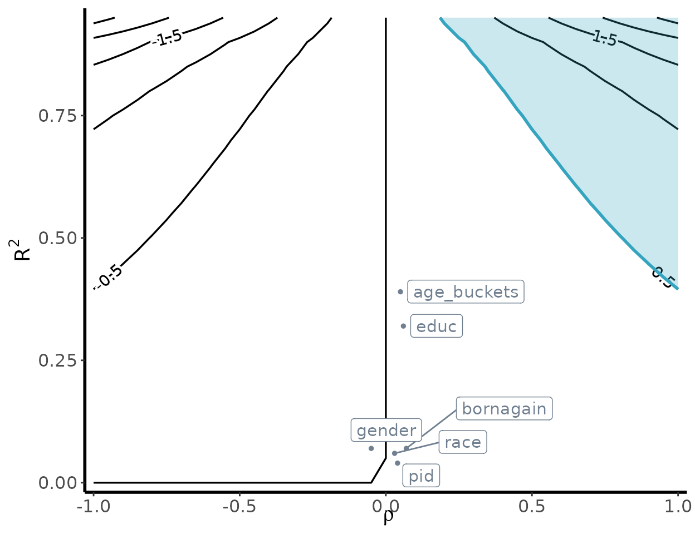

Sensitivity analysis for survey weights
survey.RmdIn the following vignette, we will walk through how to conduct a
sensitivity analysis for survey weights using
senseweight.
We will illustrate the analysis using a synthetically generated
dataset (available in data(poll.data)). The dataset is a
synthetic dataset comprising of 1000 individuals, where the outcome
variable Y indicates whether the individual supports a
policy position. When Y = 1, this implies that the
individual indicated support, whereas 0 implies a lack of support. The
dataset contains common demographic covariates used in practice (age,
education, gender, race, party identification, and an indicator for
whether an individual is a born-again Christian).1
To load in the dataset:
data(poll.data)
poll.data |> head()
#> Y age_buckets educ gender race pid bornagain
#> 1 0 36to50 College Men White Independent No
#> 2 0 Over65 Some college Women White Independent Yes
#> 3 1 36to50 College Women White Democrat No
#> 4 1 51to64 Post-grad Women White Democrat No
#> 5 0 Over65 Some college Men White Independent Yes
#> 6 1 36to50 Post-grad Men Other Other NoSetting up survey objects
The senseweight package builds on top of the
survey package to conduct sensitivity analysis. To start,
we will set up different survey objects for our analysis.
poll_srs <- svydesign(ids = ~ 1, data = poll.data)We have created a vector of population targets using a subset of the
2020 CES. It is in a locally stored vector pop_targets:
pop_targets = c(1, 0.212, 0.264, 0.236, 0.310,
0.114, 0.360, 0.528, 0.114,
0.021, 0.034, 0.805,
0.266, 0.075, 0.312, 0.349)
#Match covariate names in polling data
names(pop_targets) = model.matrix(~.-Y, data = poll.data) |> colnames()
print(pop_targets)
#> (Intercept) age_buckets36to50 age_buckets51to64
#> 1.000 0.212 0.264
#> age_bucketsOver65 educHigh School or Less educPost-grad
#> 0.236 0.310 0.114
#> educSome college genderWomen raceBlack
#> 0.360 0.528 0.114
#> raceHispanic raceOther raceWhite
#> 0.021 0.034 0.805
#> pidIndependent pidOther pidRepublican
#> 0.266 0.075 0.312
#> bornagainYes
#> 0.349We will use raking as our weighting method of choice.
#Set up raking formula:
formula_rake <- ~ age_buckets + educ + gender + race + pid + bornagain
#PERFORM RAKING:
model_rake <- calibrate(
design = poll_srs,
formula = formula_rake,
population = pop_targets,
calfun = "raking",
force = TRUE
)
rake_results <- svydesign( ~ 1, data = poll.data, weights = stats::weights(model_rake))
#Estimate from raking results:
weights = stats::weights(rake_results) * nrow(model_rake)
unweighted_estimate = svymean(~ Y, poll_srs, na.rm = TRUE)
weighted_estimate = svymean(~ Y, model_rake, na.rm = TRUE)The unweighted survey estimate is 0.54.
print(unweighted_estimate)
#> mean SE
#> Y 0.54 0.0158In contrast, the weighted survey estimate is 0.47.
print(weighted_estimate)
#> mean SE
#> Y 0.46843 0.0168Summarizing sensitivity
With the survey objects, we can now generate our sensitivity
summaries. The senseweight package provides functions for
researchers to generate (1) robustness values; (2) benchmarking results;
and (3) bias contour plots. We walk through each of these below.
Robustness Value
The robustness value is a single numeric summary capturing how strong a confounder has to be to change our research conclusion. In general, we refer to a confounder that results in enough bias to alter the research conclusion a killer confounder. The threshold bias that results in a killer confounder depends on the substantive context. In this example, we are trying to measure support. Thus, if the bias were large enough to move the estimate from 0.47 beyond 0.5, this would imply that the proportion of individuals who support the policy would change from a minority to a majority.
The summarize_sensitivity function will produce a table
that outputs the unweighted estimate, the weighted estimate, and the
robustness value corresponding to a threshold value
.
The specification for the threshold value is given by the
b_star argument in the summarize_sensitivity
function.
summarize_sensitivity(estimand = 'Survey',
Y = poll.data$Y,
weights = weights,
svy_srs = unweighted_estimate,
svy_wt = weighted_estimate,
b_star = 0.5)
#> Unweighted Unweighted_SE Estimate SE RV
#> 1 0.54 0.0157686 0.4684269 0.0167966 0.04977723We obtain a robustness value of 0.05. This implies that if the error from omitting a confounder is able to explain 5% of the variation in the oracle weights and 5% of the variation in the outcome, then this will be sufficient to push the survey estimate above the 50% threshold.
We can also choose to directly estimate the robustness value using
the robustness_value function:
robustness_value(estimate = as.numeric(weighted_estimate[1]),
b_star = 0.5,
sigma2 = var(poll.data$Y),
weights = weights)
#> [1] 0.04977723Benchmarking
To help reason about the plausibility of potential confounders, we can also perform benchmarking. Benchmarking allows researchers to estimate the magnitude of sensitivity parameters that correspond to an omitted confounder that has equivalent confounding strength to an observed covariate.
To benchmark a single covariate, we can use the
benchmark_survey function:
benchmark_survey('educ',
formula = formula_rake,
weights = weights,
population_targets = pop_targets,
sample_svy = poll_srs,
Y = poll.data$Y)
#> variable R2_benchmark rho_benchmark bias
#> 1 educ 0.3193473 0.06009261 0.02545009To interpret the benchmarking result above, we see that omitting a
confounder with equivalent confounding strength as omitting
education, controlling for all other covariates, would
result in an
parameter of 0.32, with a correlation value of 0.06. This results in a
bias of 0.03.
Alternatively, we can choose to benchmark all the covariates by
calling run_benchmarking. To specify that we are in a
survey setting, we set estimand = "Survey" in the
function:
covariates = c("age_buckets", "educ", "gender", "race",
"educ", "pid", "bornagain")
benchmark_results = run_benchmarking(estimate = as.numeric(weighted_estimate[1]),
RV = 0.05,
formula = formula_rake,
weights = weights,
Y = poll.data$Y,
sample_svy = poll_srs,
population_targets = pop_targets,
estimand= "Survey")
print(benchmark_results)
#> variable R2_benchmark rho_benchmark bias MRCS k_sigma_min k_rho_min
#> 1 age_buckets 0.39 0.05 0.02 20.19 0.13 4.79
#> 2 educ 0.32 0.06 0.03 18.41 0.16 3.72
#> 3 gender 0.07 -0.05 -0.01 -57.15 0.74 -4.54
#> 4 race 0.06 0.03 0.01 86.03 0.79 6.58
#> 5 pid 0.04 0.04 0.01 79.50 1.16 4.98
#> 6 bornagain 0.07 0.07 0.01 39.04 0.75 3.09The function will automatically return the benchmarking results, as well as a measure called the minimum relative confounding strength (MRCS), which calculates how much stronger (or weaker) an omitted confounder must be, relative to an observed covariate, in order to a be a killer confounder. If the MRCS is greater than 1, this implies that an omitted confounder would have to be stronger than observed covariate to result in a killer confounder. In contrast, for an MRCS less than 1, this implies that an omitted confounder can be weaker than an observed covariate to result in a killer confounder.
Bias contour plot
To visualize the sensitivity of our underlying estimates, we can
generate a bias contour plot using the following
contour_plot function:
contour_plot(varW = var(weights),
sigma2 = var(poll.data$Y),
killer_confounder = 0.5,
df_benchmark = benchmark_results,
shade = TRUE,
label_size = 4)
The
-axis
varies the degree to which the omitted confounder is imbalanced, while
the
-axis
varies the degree to which the imbalance in the omitted confounder is
related to the outcome. The resulting contours represent the bias that
occurs for that specified
value. The shaded region denotes the killer confounder region. This can
be specified using the killer_confounder flag, and should
map to the chosen threshold value
.